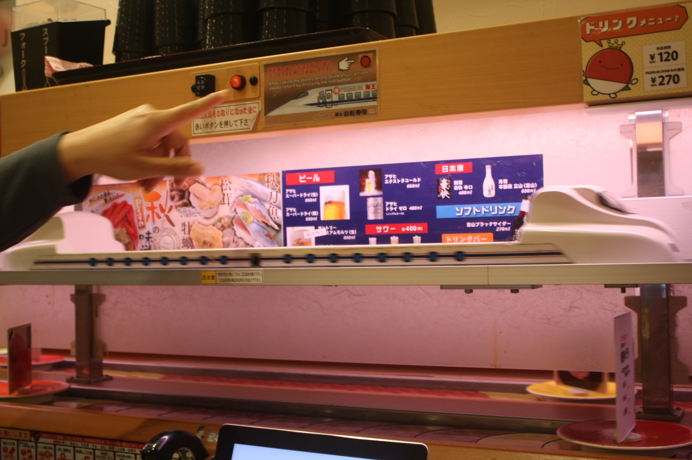
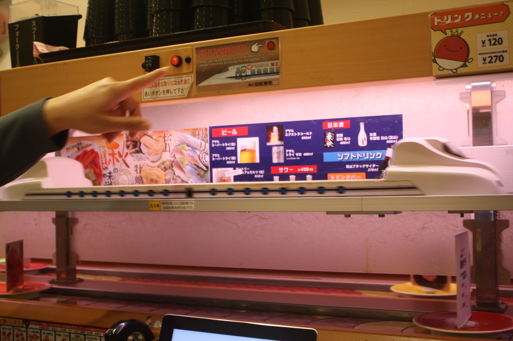

때는 2015년 12월 겨울, 제주도 여행도 안 가본 내가 처음으로
가족들과 비행기를 타고 갔던 곳은 [일본] 이였다.
사진은 비행기를 타고 가면서 찍었던 구름 사진이였다.
구름의 바닥만 보던 내가 구름보다 위로 날아가고 있어서 처음 구름의 천장을 보던 날 이였다.
도쿄는 일본의 수도이자 세계 최대의 도시권인 도쿄 광역권의 핵심 도시.
일본의 정치, 경제, 문화, 교육, 금융, 산업, 교통, 패션의 중심지이며,
세계적으로도 뉴욕, 런던과 함께 3대 세계 도시 중 한 곳으로 뽑힌다.
사진은 숙소에서 나와 골목을 찍었던 사진이다.
때는 2015년 12월 겨울, 제주도 여행도 안 가본 내가 처음으로
가족들과 비행기를 타고 갔던 곳은 [일본] 이였다.
사진은 비행기를 타고 가면서 찍었던 구름 사진이였다.
구름의 바닥만 보던 내가 구름보다 위로 날아가고 있어서 처음 구름의 천장을 보던 날 이였다.
사진은 도쿄에 도착하여, 나라타 공항에서
넥스(NEX)기차를 타고 신주쿠로 이동할 때 찍은 사진이다.
기차를 타고 가면서, 풍경 구경 중 성(?)같은 것이 가정집 사이에 있는게
신기해서 찍었던 사진이다.
기차를 타고 가서, 신주쿠에 도착하여 첫 끼로 먹은 규카츠 사진이다.
일본에는 많은 규카츠 프렌차이점 중에 '모토무라 규카츠'를 방문해 규카츠를 먹으러 갔다.
타국에서 처음으로 접해 본 음식이였지만, 내 입맛에 너무 안성맞춤 이였다.
아직까지도 그 맛을 잊지 못한다. 코로나가 종식되면 꼭 다시 먹고 싶은 음식 중 하나이다.
일본하면 야경도 봐줘야 된다는 걸 인터넷에서 볼 수 있었다.
그래서 밤에 가족과 함께 도쿄 주위에 있는 전망대를 검색 해보았다.
우리는 준비를 마치고, 도쿄 도청 전망대를 찾아가게 되었다.
이 사진이 바로 도쿄 도청 전망대에서 찍은 사진이다.
한국이랑 비슷한 야경이지만, 일본만에 또 다른 갬성이 있는것 같았다.
2일차, 일본하면 대표적으로 떠오르는게 하나 있다. 바로 [건담] 이다
이 사진은 오다이바에 자리 잡은 실제 사이즈의 건담이다.
만화 강국인 만큼 만화 캐릭터에 대해 실제 크기로 묘사한 것을 본 것은 신기한 경험이였다.
(내가 갔을 때는 저 건담이였는데, 지금은 또 다른 건담이다.)
(아마 몇년마다 한번씩 다른 건담으로 바뀌는 것 같다.)
아래 사진들도 오다이바에서 찍은 사진들이다.

 

마지막은 편의점에서 찍은 사진이다.
일본하면 편의점 문화가 많이 발달 되어 있어서, 왠만한 끼니를 편의점에서 떼울 수 있었다.
야식을 먹기 위해서, 맥주와 간단한 간식들을 사러 나왔을 때이다.
(사실, 얼굴(?)이 나온 사진이라고는 이거밖에 없어서 넣게 되었다.)